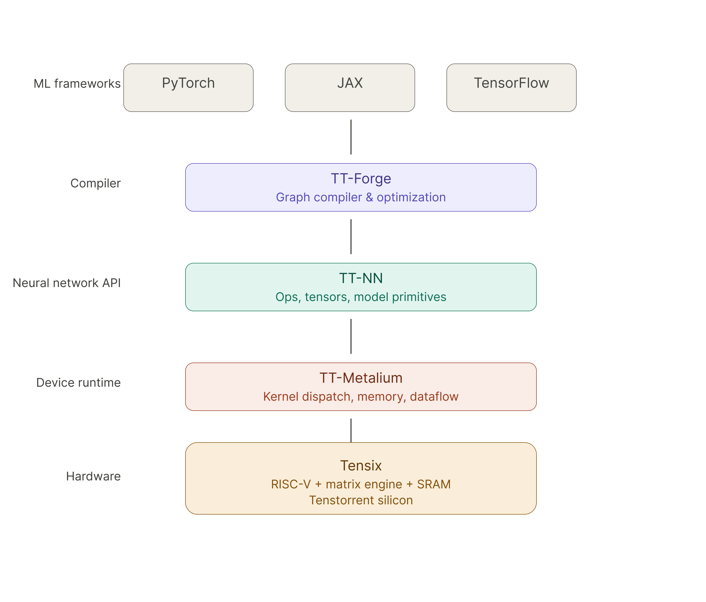
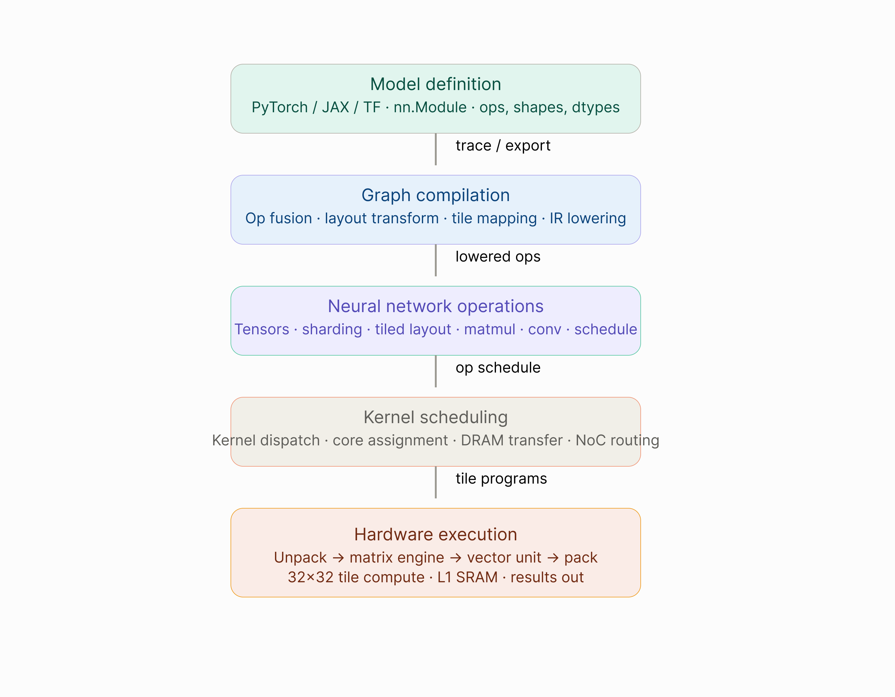

Software Overview
Introduction
Tenstorrent provides a full software stack that enables developers to run and optimize machine learning workloads on Tenstorrent hardware. The stack includes tools for compiling models, programming neural network operations, managing device execution, and interacting with hardware. It is designed as a layered system where each component builds on top of the lower-level infrastructure.
Software Stack Diagram
{kind=link}

This layered architecture separates high-level model development from low-level hardware execution.
How the Stack Works
Tenstorrent software transforms a machine learning model into executable kernels that run on Tensix compute cores. The process typically follows these steps:
{kind=link}

Each layer of the stack is responsible for a different stage of this pipeline.
Components Overview
TT-Forge
TT-Forge is the compiler responsible for transforming machine learning models into an optimized execution graph. It performs graph transformations, operation fusion, and hardware-specific optimizations.
Use TT-Forge when you need to:
Compile models from PyTorch, JAX, or TensorFlow
Optimize graph execution automatically
Bridge high-level frameworks with Tenstorrent hardware
TT-NN
TT-NN provides a high-level API for implementing neural network operations and models on Tenstorrent hardware. Developers use TT-NN to work with tensors, operations, and model execution.
Use TT-NN when you need to:
Implement neural network models with a PyTorch-like interface
Access pre-optimized neural network operations
Work with both Python and C++ APIs
TT-Metalium
TT-Metalium is the low-level runtime responsible for interacting directly with Tenstorrent devices. It manages:
Memory allocation and management
Kernel execution
Data movement across the network-on-chip
Device scheduling
Use TT-Metalium when you need to:
Write custom kernels for specialized operations
Optimize performance at the hardware level
Directly control device resources
Developer Entry Points
Different developers interact with different layers of the stack. Typical entry points include:
ML developers → TT-NN
System developers → TT-Metalium
Compiler developers → TT-Forge
Execution Flow
When running a model, the following sequence typically occurs:
A model is defined in a machine learning framework (PyTorch, JAX, TensorFlow)
TT-Forge compiles the model graph into an optimized execution plan
TT-NN executes neural network operations
TT-Metalium dispatches kernels to hardware
Tensix cores perform the computation
Next Steps
To learn more about individual components of the stack:
TT-Forge Documentation - Learn about model compilation and optimization
TT-NN Overview - Explore neural network operations
TT-Metalium Overview - Understand low-level hardware programming
Hardware Architecture - Deep dive into Tensix core design